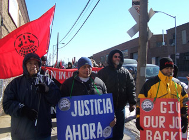
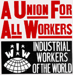

All workers except agricultural and fishery workers, engaged in producing and processing food, beverages, and tobacco products.
Submitted on Wed, 08/08/2007 - 12:31pm
For two years workers in New York food industry have been organizing with the IWW for higher wages, better conditions and respect on the job. The IWW IU 460's organizing drive has involved the participation of hundreds of workers and has significantly improved, directly and indirectly, wages and working conditions across the industry. Yet there is still a great deal of organizing left to do: in many sectors, sub-minimum wages and slave-like conditions still exist and the bosses have not been dealt a decisive blow. Today we urge you to pledge $5 per week to support this important campaign that has the capacity to build the IWW into a powerful force in the food industry, not just in New York, but also across the country.
WHAT HAS HAPPENED?
So far we have talked to our Fellow Workers in over locations in dozens of companies. As many as a thousand workers in the industry have heard about the campaign and over 70 have joined the IWW. In response to the campaign and numerous direct actions at these shops the bosses have given up the following wage gains (the NY minimum wage went up to $7.15 this January): Handyfat Trading from $4.50 to $8.00, EZ-Supply/Sunrise Plus Corp from $5.00 to $6.75, Amersino Marketing $5.00 to $7.15, and Top City Produce from $6.00 to $7.15. All of these shops now comply with overtime laws. And at Top City, a contract is waiting to be signed which stipulates that workers will make $8.50. Over the last two years bosses in the industry, who had grown accustomed to taking advantage of the workers, got a rude shock.
In response, the bosses have tried to bust the Union. 20 workers were fired from EZ-Supply and Handyfat in late December of 2006 and 5 temporarily suspended from Top City for a month at around the same time, for a total of around $10,000-11,500 in lost wages per week. Many of these workers have been able to find work in other shops, but some workers have been blacklisted in the industry and are having trouble keeping jobs.
In the NLRB supervised elections at Handyfat, three workers were bribed to vote against the union and at Amersino, a shift of non-workers were brought in by the boss to rig the vote. Countless other threats and intimidation have ensued including vandalism to workers property such as a car engine that was destroyed.
The workers and supporters have directly responded to the union busting with 10 strikes, dozens of pickets and demonstrations, and several marches, one with 125 and another with 200 participants. The longest picket was maintained for a full week, stopping several trailers worth of deliveries.
Now is your chance to join directly in this fight. The bosses have been stuffing their pockets with profits while the workers take home less than minimum wage and hours exceeding 60 hours per week. The bosses' parade must stop. We have a vision for this campaign to stretch across the industry and continue the gains of this movement to improve conditions everywhere. It will be a serious undertaking, but one that we believe the Union is ready to make.
Here is a run down of some critical details of the legal actions of this
campaign:
--Two workers were reinstated at Amersino (one with back wages) and a
third is waiting the appeal
--NLRB decision on the unfair Handyfat firings charges is expected in
late August
--NLRB hearing on unfair EZ-Supply firings charges is in July
--There are seven class action lawsuits filed against companies under the Fair Labor Standards Act and NY labor law:
Submitted on Tue, 07/03/2007 - 9:34pm
The Industrial Workers of the World recently marched on HWH Trading Corp to demand fair pay and better working conditions for the company’s 15 warehouse employees. The July 1st march was the first public action of an ambitious organizing drive that the NYC IWW is undertaking this summer. Dubbed “9 in 90,” the IWW is hoping to organize nine new shops in the next 90 days. The IWW has already made waves in the NYC foodstuffs industry by organizing five of the most exploitative warehouses in the city.
The current organizing drive kicked off in mid-June, and organizers have already had talks with workers from four new shops. HWH, a produce distributor in Queens, is the first of the “9 in 90” whose workers have gone public with their IWW membership. At HWH, workers are not only expected to work extremely long hours, but routinely travel up and down the Eastern seaboard. Workers come into the warehouse Sunday night, spend the night loading up their trucks, and head out for long trips Monday morning.
Submitted on Tue, 05/15/2007 - 3:31am
I’m an Industrial Workers of the World (IWW) member. I worked hard to start the union strong, so that we would be strong in the end. And just like when we started, we’ve grown and become strong. Because in union there is strength.
– Eliezer Maca Gallardo
Dear Sisters and Brothers,
Warehouse workers in New York City need your help in their fight against employers who have stolen their wages, thumbed their noses at labor laws, and vigorously fought against unionization. These workers have built the IWW Food and Allied Workers Union - I.U.460/640 against incredible odds, and still stand strong in the face of mass firings. They've shown how immigrant workers can fight sweatshop conditions to build a better future.
Submitted on Sat, 04/28/2007 - 1:08am
Workers at the BriarPatch food coop, located in Grass Valley, California, near Sacramento in the foothills of the Sierra Nevada Mountains have joined the IWW. Here is their official announcement:
As we step through the doors of our great new store, it is the goal of many employees to strengthen and improve the working conditions, policies, and benefits for current and future employees.
In an effort to enhance the cooperative spirit between management and staff, employees at the BriarPatch, supported by management, are uniting with the Industrial Workers of the World. The IWW is an alternative organization that supports employees and shops in their individual and creative paths to bettering the workplace.
Submitted on Mon, 04/02/2007 - 7:25pm
Members from the NYC Industrial Workers of the World (IWW) put up daily picket lines this past week in front of Giant Big Apple Beer Ltd, a beer and soda distributor in Woodside, Queens. Wobblies, workers, and supporters were out there every day starting Monday, March 26, through Saturday, from about 8:00 am until 2:00 pm. The pickets were held in response to the vandalism of union workers’ cars. The goal of the pickets was to hurt the company by preventing trucks from making deliveries to the company.
The pickets proved to be a useful tool against the company, as a number of trucks did not want to cross the picket line and thus did not make their deliveries. Tuesday was probably the most successful day of the picket, as three out of four trucks were turned away. Most of the truck drivers who make deliveries to Giant Big Apple are Teamsters and thus respect picket lines. However, there were some Teamsters as well as some independent contractors who drove their trucks past the lines. Even though some drivers crossed, enough trucks were turned away to have caused a substantial loss to the company this week.